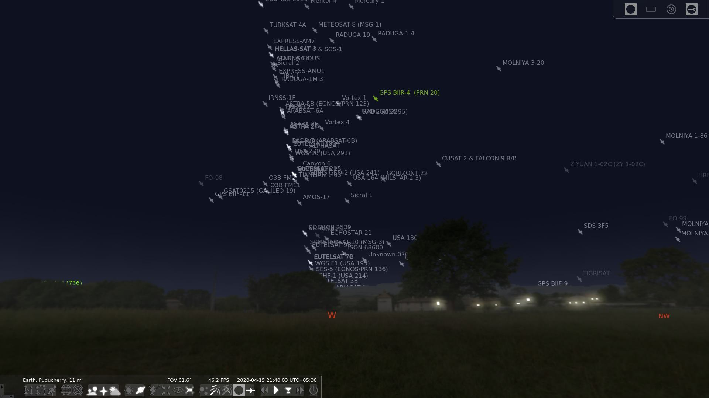

Lockdown is not the same for all. Thousands of migrant workers across India especially from the North are forced to walk thousands of kilometers to reach their natives when the Govt. did not consider about them before announcing the lockdown. If I am not wrong, it happened only in India. The rest of the world can best understand this fascist neo-liberal govt. of India under BJP.
Working From Home has it's own postivies and negatives. I have been working From Home 2 days in a week for past 1 year before COVID-19 lockdown. With lockdown it's continuous. All day from morning 9:30am to evening 5:30 or 6:00pm I would be spending more time in front of my laptop than doing any physical work. When it's evening I have an urge to stop working and do something physical like going out and not be constrained within the walls. Stop consuming too much information from social media, exercise, cycling etc.,
The feeling would be the opposite for those who work at the office and come back home in the evening. They would want to be rested. To check social media, consume information etc., This dialectics exist between working from office and working from home.
During this lockdown, my apartment terrace is the goto place for me to breathe fresh air and not constrained by walls. I enjoy the winds and watching other people on their terraces kiteflying. Kiteflying has become a pass time for many in our locality post lockdown. People come up with creative shapes for the kites. It's funny to watch them flying it.
Once it's dark, one after the other brighter objects starts to appear in the sky. The first thing that I observe is the planet Venus on the North West somewhere around 40 degree altitude. Then the rest of the stars Sirius, Procyon, Capella, Betelgeuse, Orion constellation around Venus on the west and Arcturus and Azimech on the East and more on the North and South. East and West are what I observe due to less light pollution on those sides compared to North or South.
I use the famous Free and Open Source Planetarium Software Stellarium to explore the night sky and figure out the details of the object that I am looking at. I used to come alone to the terrace before lockdown, but after lockdown most of them in the apartment started to join me as well. When I was using Stellarium in my phone to point at the Sky to spot something, others got curious to know what I am doing. I explained them and they got very excited to try it out.
I shared the apk with them (as stelliarum is a paid app in google play store). I obtained a basic build from github repository. Now I consider purchasing Stellarium from play store to support the couple of developers behind this FOSS project. Stellarium for desktop is free though. I taught them some basics of how to use and they picked up from there and started exploring on their own.
What started as star gazing, quickly turned into spotting Satellites. I know we can spot International Space Station (Zarya) at specific time on specific days. I checked at NASA's Spot The Station website to get the ISS sighting timings for my location. Fortunately, for the week, we had the opportunity to spot it. People were execited to see a bright light moving faster for the first time and they caputred video in their phones and shared in their social networks.
I wanted to check, what else could be spotted apart from ISS and jumped into Stellarium. I took my laptop with me to terrace. I will sit down facing west and figure out if any other satellite could be spotted. The latest version of Stellarium comes with realistic mode enabled by default. It means it will take into account the light pollution and the brightness of celestial objects into account for our location and simulate them. This means it only show what will be really visible for our eyes on the sky.
I figured out that we could turn off this realistic mode. When I did that, I was awe struck at the congestion of geo-stationary satellites parked (not really, their orbital speeds are in sync with earth's speed so they appear stationary) from East to West and vice versa. With Stellarium we can adjust the time to move backdward and forward and see what was there or what would be there in the sky at that time. I used this to spot Hubble Space Telescope and SWIFT.

It became a routine for us. People started to show up daily with a new question. It was a good opportunity to communicate science to them. We talked about the International Space Station, other statellites and their purpose. I shared videos and movies with them on science fiction. We have some 4 dish antennas mounted at our terrace pointed to a specific direction. I explained them how there is a geo stationary satelitte out there in the direction that the dish is pointing and it is signals from such satellites that they receive signals which they watch in their TVs.
This post has already grown long. I will end it here and continue the rest in part 2.